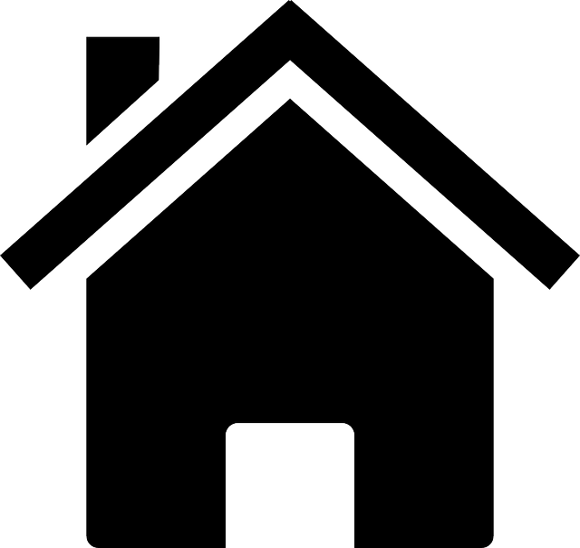

5.5.2.- Variables locales

Hemos realizado la comparación del cuerpo de un método con un pequeño programa que en ocasiones podrá tener cierta complejidad. En tales casos puede ser habitual que necesitemos algunas variables internas o auxiliares para realizar cálculos intermedios. Esas variables son conocidas con el nombre de variables locales.
La forma de declarar una variable local es exactamente la misma que vimos a principio de curso: tipo y nombre de la variable junto con aquellos modificadores que permita el lenguaje. De hecho, en Java, las variables que has estado usando hasta ahora ya eran locales, pues eran variables declaradas dentro de un método llamado main.
Por ejemplo, supongamos que vamos a implementar un método (llamado por ejemplo sumaSerie) que sume todos los números que hay entre dos enteros que se pasan como parámetros. Para llevar a cabo esta tarea necesitaríamos al menos un par de variables: un contador para ir desde un número hasta otro y un acumulador para ir sumando sucesivamente cada número.
int sumaSerie (int inicio, int fin) {
int contador; // Variable local contador
int suma= 0; // Variable local acumuladora de la suma de cada número recorrido
for (contador=inicio; contador<=fin; contador++) { // Recorremos todos los números desde inicio hasta fin
suma +=contador; // Vamos sumando en el acumulador suma cada uno de los números que vamos recorriendo
}
return suma; // Devolvemos la suma acumulada
}
Debes evitar asignar a las variables locales nombres que coincidan con el de algún parámetro. El compilador no lo permitirá pues se trataría de un identificador duplicado.
Recomendación
Es muy importante que sepamos distinguir cuándo un dato determinado debe ser almacenado en un atributo y cuándo se trata simplemente de un cálculo intermedio o auxiliar y por tanto es suficiente con una variable local.
Ten en cuenta que la información almacenada en una variable local desaparece en cuanto finalice la ejecución de un método. En consecuencia, si se puede volver a calcular esa información en el futuro sin necesidad de tener que guardarla en un atributo, es que no es necesario un atributo para ella.
Ejemplo: imagina una clase que representa a un rectángulo, la cual contiene sendos atributos de tipo real para almacenar su base y su altura. Podríamos tener también un atributo para guardar su superficie, pero no tendría sentido, pues cada vez que quisiéramos saber su superficie podríamos calcularla.
Hay lenguajes en los que existe la posibilidad de disponer de variables globales. Se trata de variables a las cuales se tiene acceso desde cualquier parte del programa.
En Java, así como en otros lenguajes orientados a objetos, los programas consisten en un conjunto de clases, unas independientes de otras, dando lugar a que toda variable o atributo que se defina en cada clase sea independiente a las que se definan en las demás. Esto hace que el concepto de variable global no tenga mucho sentido en este contexto.
Lo más parecido a una variable global que podríamos encontrar en programas escritos en lenguaje Java serían los siguientes casos:
- Los atributos estáticos de una clase, que serían valores comunes y compartidos por todos los objetos instancia de una misma clase. Estos atributos podrían considerarse como variables "globales" a todos los objetos que se instancien de la clase.
- Los atributos estáticos públicos, que además de ser compartidos por todos los objetos de una misma clase, serían accesibles desde cualquier método de cualquier otra clase, no sólo desde los objetos instancia de la propia clase. Es decir, serían visibles desde cualquier parte del programa.
- Los atributos estáticos contenidos por la clase principal de un programa Java. Se considera la clase principal de un programa Java aquella que contiene un método
main. El métodomainde una clase Java, que veremos más adelante, es un método estático especial a partir del cual comenzaría la ejecución de un programa Java.
Para saber más
Si tienes interés acerca del concepto de variable global frente al de variable local en los lenguajes de programación puedes consultar la siguiente referencia:
Si declaras una variable local con el mismo nombre (identificador) que un atributo, el compilador de Java lo permitirá, pero debes tener en cuenta que cuando hagas referencia a ese identificador te estarás refiriendo a la variable local y no al atributo. En estos casos se dice que has ocultado (en inglés "hidden", ocultado o "shadowed", "ensombrecido") el atributo.
Esto sucede tanto con las variables locales como con los parámetros del método: si se llaman igual que un atributo, ocultarán (hide o shadow, en inglés) al atributo. Pero entonces, ¿cómo podríamos acceder al atributo? Para resolver este problema dispondrás del operador de autorreferencia this, que verás en el próximo apartado.
Puede que entonces te preguntes ahora: ¿y qué pasa si un parámetro y un atributo tienen el mismo nombre? Esta situación no es posible y ya la hemos comentado anteriormente. Dentro de un método, el compilador de Java no permite nombrar a una variable local con el mismo identificador que un parámetro del método.